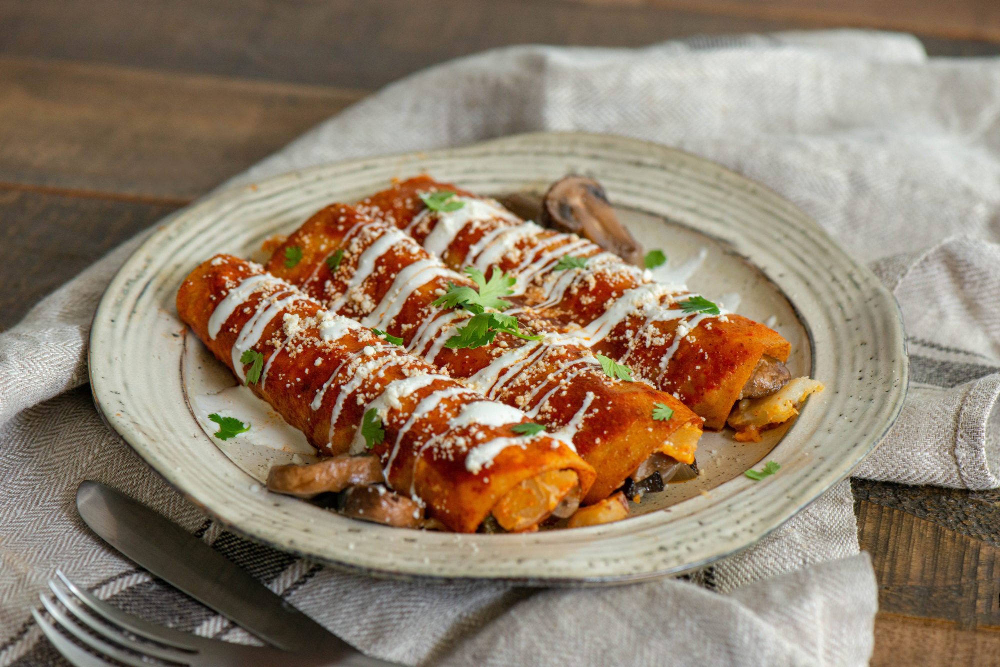

Enchiladas

Traditional red enchiladas are a classic Mexican dish made by filling soft corn tortillas with ingredients like shredded chicken, cheese, beans, or beef, then rolling them up and smothering them in a rich, vibrant red chile sauce.
Red enchiladas carry deep cultural roots, representing family gatherings, regional traditions, and homemade cooking passed down through generations. Their balance of flavors—spicy, savory, and slightly tangy—makes them a beloved comfort food throughout Mexico and beyond.
Ingredients for the sauce
- 8 guajillo peppers
- 2 Dried pasilla pepper
- 2 large garlic clove
- 1 teaspoon kosher salt
- 1/4 teaspoon dried oregano
- 1/8 tablespoon whole cumin
- 1 1/2 cups stock vegetable or chicken broth
- 1 tablespoon vegetable oil
Ingredients for enchiladas
- 1/3 cup vegetable oil
- 2 to 3 cups queso fresco, or shredded beef or chicken
- 12 corn tortillas
- Mexican crema
- 2 cups of shredded lettuce (romaine or iceberg)
Cooking steps for the enchiladas
Cooking the sauce
- Prepare the peppers
- Remove stems and seeds from the guajillo and pasilla peppers
- Lightly toast them in a dry skillet over medium heat for about 30-60 seconds per side, until fragrant (be careful not to burn them).
- Soften the peppers
- Place the toasted peppers in a heatproof bowl and cover with hot water.
- Let them soak for 15–20 minutes until they are soft and pliable. Drain afterward.
- Blend the sauce base
- In a blender, add the softened peppers, garlic cloves, cumin, oregano, and salt.
- Pour in the broth and blend until smooth.
- Cook the sauce
- Heat the vegetable oil in a saucepan over medium heat.
- Carefully pour in the blended sauce and simmer for 10–15 minutes, stirring occasionally, until it thickens slightly and the flavors meld.
- Adjust and finish
- Taste and adjust salt if needed.
- Strain the sauce through a fine sieve if you prefer a smoother texture.
Steps to assemble the enchiladas
- Prep the tortillas
- Heat 1/3 cup vegetable oil in a skillet over medium heat.
- Quickly fry each tortilla (just a few seconds per side) until softened and pliable — this prevents them from tearing when rolling.
- Drain on paper towels.
- Dip and fill
- Lightly dip each tortilla in the warm red enchilada sauce, coating both sides.
- Place on a plate, add about 2–3 tablespoons of your chosen filling (queso fresco, shredded beef, or chicken), and roll tightly.
- Arrange in dish
- Place rolled tortillas seam-side down in a baking dish.
- Once all are assembled, pour more red sauce over the top to cover.
- Bake (optional)
- For a more melded, bubbly finish, bake at 350°F (175°C) for 10–15 minutes.
- If you want a fresher style (like in many traditional Mexican homes), you can skip baking and serve immediately after saucing.
- Garnish and serve
- Top with shredded lettuce, a drizzle of Mexican crema, and extra queso fresco if desired.
- Serve with rice and beans on the side for a full meal.
Home